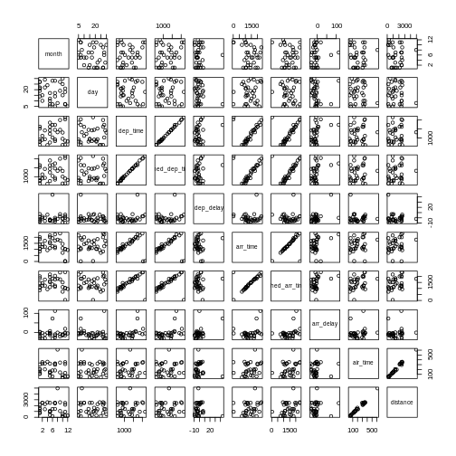

Getting to know the data
Last updated on 2025-11-18 | Edit this page
Estimated time: 40 minutes
Overview
Questions
- “How do I import data?”
- “How are the data distributed?”
- “Are there correlations between variables?”
Objectives
- “Importing data”
- “getting an overview of data”
- “how to find metadata”
- “using plots to explore our data”
Read in data in R
First we load tidyverse which make datamanipulation
easier. We also load a package to help us read Excel files:
R
library(tidyverse)
library(readxl)
Let us read in the excel spreadsheet we downloaded in preparation, and saved in the data folder of our project:
R
flightdata <- read_excel("data/flightdata.xlsx")
Taking a look at the data
Always begin by taking a look at your data!
R
flightdata %>%
head() %>%
view()
This dataset is pretty big. It is actually so big, that a
view() of the entire dataset takes about 10 seconds to
render. And some of the other things we would like to do to it, takes
even longer.
Instead of waiting for that, it can be a good idea to work and experiment with a smaller part of the dataset, and only use the entirety of the data when we know what we want to do.
One way of doing that would be to use the function
sample_frac to return a random fraction of the dataset:
R
flightdata %>%
sample_frac(0.005) %>%
view()
After taking a quick look at the data, it is time to get some statistical insight.
The summary function returns summary statistics on our data:
R
summary(flightdata)
OUTPUT
year month day dep_time sched_dep_time
Min. :2013 Min. : 1.000 Min. : 1.00 Min. : 1 Min. : 106
1st Qu.:2013 1st Qu.: 4.000 1st Qu.: 8.00 1st Qu.: 907 1st Qu.: 906
Median :2013 Median : 7.000 Median :16.00 Median :1401 Median :1359
Mean :2013 Mean : 6.549 Mean :15.71 Mean :1349 Mean :1344
3rd Qu.:2013 3rd Qu.:10.000 3rd Qu.:23.00 3rd Qu.:1744 3rd Qu.:1729
Max. :2013 Max. :12.000 Max. :31.00 Max. :2400 Max. :2359
NA's :8255
dep_delay arr_time sched_arr_time arr_delay
Min. : -43.00 Min. : 1 Min. : 1 Min. : -86.000
1st Qu.: -5.00 1st Qu.:1104 1st Qu.:1124 1st Qu.: -17.000
Median : -2.00 Median :1535 Median :1556 Median : -5.000
Mean : 12.64 Mean :1502 Mean :1536 Mean : 6.895
3rd Qu.: 11.00 3rd Qu.:1940 3rd Qu.:1945 3rd Qu.: 14.000
Max. :1301.00 Max. :2400 Max. :2359 Max. :1272.000
NA's :8255 NA's :8713 NA's :9430
carrier flight tailnum origin
Length:336776 Min. : 1 Length:336776 Length:336776
Class :character 1st Qu.: 553 Class :character Class :character
Mode :character Median :1496 Mode :character Mode :character
Mean :1972
3rd Qu.:3465
Max. :8500
dest air_time distance hour
Length:336776 Min. : 20.0 Min. : 17 Min. : 1.00
Class :character 1st Qu.: 82.0 1st Qu.: 502 1st Qu.: 9.00
Mode :character Median :129.0 Median : 872 Median :13.00
Mean :150.7 Mean :1040 Mean :13.18
3rd Qu.:192.0 3rd Qu.:1389 3rd Qu.:17.00
Max. :695.0 Max. :4983 Max. :23.00
NA's :9430
minute time_hour
Min. : 0.00 Min. :2013-01-01 10:00:00
1st Qu.: 8.00 1st Qu.:2013-04-04 17:00:00
Median :29.00 Median :2013-07-03 14:00:00
Mean :26.23 Mean :2013-07-03 09:22:54
3rd Qu.:44.00 3rd Qu.:2013-10-01 11:00:00
Max. :59.00 Max. :2014-01-01 04:00:00
We get an overview of all the data (and the summary function have no problems working with even very large datasets). From this we learn a bit about the datatypes in the data, and something about the distribution of the data.
Metadata
Metadata is data about the data. Usually we are interested in the provenance of the data. In this case it is data on all flights departing New York City i 2013, from the three commercial airports, JFK, LGA and EWR. The data was originally extracted from the US Bureau of Transportation Statistics, and can be found at https://www.transtats.bts.gov/Homepage.asp
The columns of the dataset contains the following data:
- year, month, day Date of departure.
- dep_time, arr_time Actual departure and arrival times (format HHMM or HMM), local tz.
- sched_dep_time, sched_arr_time Scheduled departure and arrival times (format HHMM or HMM), local tz.
- dep_delay, arr_delay Departure and arrival delays, in minutes. Negative times represent early departures/arrivals.
- carrier Two letter carrier abbreviation. See airlines to get name.
- flight Flight number.
- tailnum Plane tail number. See planes for additional metadata.
- origin, dest Origin and destination. See airports for additional metadata.
- air_time Amount of time spent in the air, in minutes.
- distance Distance between airports, in miles.
- hour, minute Time of scheduled departure broken into hour and minutes.
- time_hour Scheduled date and hour of the flight as a POSIXct date. Along with origin, can be used to join flights data to weather data.
Always remember to save information about what is actually in your data.
Let us make a plot
What is the distribution of departure delays? Are there a lot of flights that depart on time, and a few that are very delayed?
A histogram is a great way to get a first impression of a particular variable in the dataset, so let us make one of those:
R
flightdata %>%
ggplot(mapping = aes(x = dep_delay)) +
geom_histogram()
OUTPUT
`stat_bin()` using `bins = 30`. Pick better value `binwidth`.WARNING
Warning: Removed 8255 rows containing non-finite outside the scale range
(`stat_bin()`). A histogram divides the numeric values of the departure delay into
“buckets” with a fixed width. It then counts the number of observations
in each bucket, and plot a column matching that count.
A histogram divides the numeric values of the departure delay into
“buckets” with a fixed width. It then counts the number of observations
in each bucket, and plot a column matching that count.
Note the warning! By default ggplot divides the
observations into 30 buckets. 30 buckets are almost never the right
number, so adjust it by adding eg bins = 50 to
geom_histogram().
What is the right number of bins?
The right number of bins is the number of bins that show what we want to show about the data.
Let us make another plot!
After looking at the distrubtion of observations in the different variables, we might want to explore correlations between them.
What, for example, is the connection between delays of departure vs. arrival for these flights?
R
flightdata %>%
sample_frac(.005) %>%
ggplot(mapping = aes( x = dep_delay, y = arr_delay)) +
geom_point()
 We pipe the data to
We pipe the data to sample_frac in order to look at 0.5% of
the data. The result of that is piped to the ggplot
function, where we specify that the data should be mapped
to the plot, by placing the values of the delay of departure on the
X-axis, and the delay of arrival on the Y-axis.
That in itself is not very interesting, so we add something to the
plot: + geom_point(), specifying that we would like the
data plotted as points.
This is an example of a case where it can be a good idea to work on a smaller dataset. Plotting the entirety of the data takes about 40 times longer than plotting 0.5% of the data.
When we explore data, we often want to look at correlations in the data. If one variable falls, does another fall? Or rise?
Making these kinds of plots can help us identify interesting correlations, but it is cumbersome to make a lot of them. So that can be automated.
The build-in plot function in R will take a dataframe,
and plot each individual column against every other column.
To illustrate this we cut down the dataset some more, looking at an even smaller subset of the rows, and eliminating some of the columns. To get a better plot without a lot of warnings, we also remove missing values from the dataset:
R
flightdata %>%
na.omit() %>%
sample_frac(.0001) %>%
select(-c(year, carrier, flight, tailnum, hour, minute, time_hour, origin, dest)) %>%
plot()

This gives us a good first indication of how the different variables
varies together. The name of this type of plot is
correllogram because it shows all the correlations between
the selected variables.
Bringing distrubtion and correlation together
A better, or perhaps just prettier, way of doing the above is to use
the library GGally, which have a fancier version, showing
both the distribution of values in the different columns, but also the
correlation between the variables.
Begin by installing GGally:
R
install.packages("GGally")
Now we can plot:
R
library(GGally)
flightdata %>%
sample_frac(.0001) %>%
select(-c(year, carrier, flight, tailnum, hour, minute, time_hour, origin, dest)) %>%
na.omit() %>%
ggpairs(progress = F)

We need to cut down the number of observations again - the scatterplots would be unreadable otherwise. The classical corellogram is enriched with a densityplot in the diagonal, basically a very smooth histogram, and the correlation coefficients above the diagonal.
- “Always start by looking at the data”
- “Always keep track of the metadata”